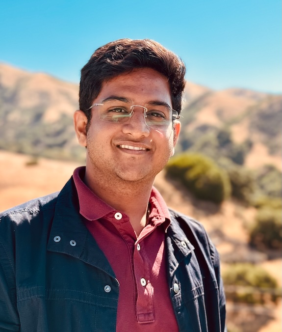
Shrey Pandit
Joining as Research Scientist @ Salesforce Research (in May 2025) | MS CS @ UT Austin
Hey, I am Shrey Pandit
I am currently pursuing a Master’s degree in Computer Science at the University of Texas at Austin, under the guidance of Dr. Greg Durrett and Dr. Ying Ding, focusing on the Hallucination of Large Language Models (LLMs) in the Medical Domain. Prior to this, I completed my undergraduate studies at BITS Pilani - Goa Campus, earning a Bachelor of Engineering in Computer Science, with my thesis conducted at Microsoft Research, India.
My professional experience includes a research internship at Salesforce in Palo Alto, California, where I collaborated with Dr. Shafiq Joty on training state-of-the-art Retrieval-based Large Language Models (SFR-RAG). Additionally, I served as a research intern at Microsoft Research Lab under the mentorship of Dr. Sunayana Sitaram, where I led a team of interns to explore the compression of massive LLMs and investigated the impact of compression on model fairness. During my undergraduate studies, I also collaborated with Princeton-NLP under the guidance of Ameet Deshpande and Karthik Narasimhan on multilingual data augmentation techniques, specifically focusing on MixUp.
With the increasing adoption of LLMs and their downstream applications, my current research interests center on detecting and mitigating hallucinations in LLMs, both in general-purpose models and domain-specific models, such as Medical LLMs. Additionally, I am deeply interested in the agentic applications of LLMs and actively learn about the latest trends in this field. Beyond textual language processing, I am keen to expand my knowledge in other modalities, including Speech, Vision, and Reinforcement Learning. To this end, I have undertaken graduate-level coursework under distinguished professors such as Kristen Grauman, David Harwath, and Peter Stone.
I was the President of the Society for Artificial Intelligence and Deep Learning (SAiDL) at BITS-Goa, where I led initiatives to promote ML knowledge, organized discussions on emerging trends, and contributed to open-source projects, fostering a vibrant tech community. I am also happy to mentor students seeking to start their NLP research journey. Feel free to reach out to me over my Email
Affiliations
UT Austin
MS Computer Science
2023-2025
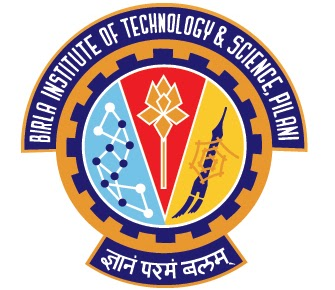
BITS Pilani, Goa
BE Computer Science
2019-2023
Salesforce Research
Research Intern
Summer 2024, Palo Alto
Retrieval Augmented Generation
Microsoft Research
Research Intern
2023
Fairness and ML Compression

Google Summer of Code
Contributor
Summer 2022
Video Processing and Action Detection
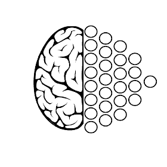
Society for Artificial Intelligence and Deep Learning
President
2023
Highlights!
- Feb 25' - New Preprint out: MedHallu: A Comprehensive Benchmark for Detecting Medical Hallucinations in Large Language Models 🥳
- Jan 25' - Paper accepted at ICLR 2025: FaithEval: Can Your Language Model Stay Faithful to Context, Even If "The Moon is Made of Marshmallows"! 🎉
- Oct 24' - New Preprint out: SFR-RAG: Towards Contextually Faithful LLMs 🎊
- June 24' - Joined Salesforce Research as a Research Intern 🎉
- May 24' - Got a paper accepted at NAACL 2024!: AdaPT: A Set of Guidelines for Hyperbolic Multimodal Multilingual NLP 🔥
- Aug 23' - Joined UT Austin for my Master's in Computer Science
- May 23' - Got a paper accepted at ACL 2023: A Comparative Study on the Impact of Model Compression Techniques on Fairness in Language Models 🔥
- Jan 23' - Started a project at APPCAIR Lab in collaboration with TCS Research 🥳
- Jan 23' - Got a paper accepted at ACL 2022: DMix: Adaptive Distance-aware Interpolative Mixup 🔥
- Jan 23' - Got selected for Google Research week 🎊
- Jul 22' - Joined Microsoft Research as a Research Intern 🎉
- May 22' - Got a paper accepted at NAACL 2022: CIAug: Equipping Interpolative Augmentation with Curriculum Learning 🔥
Publications
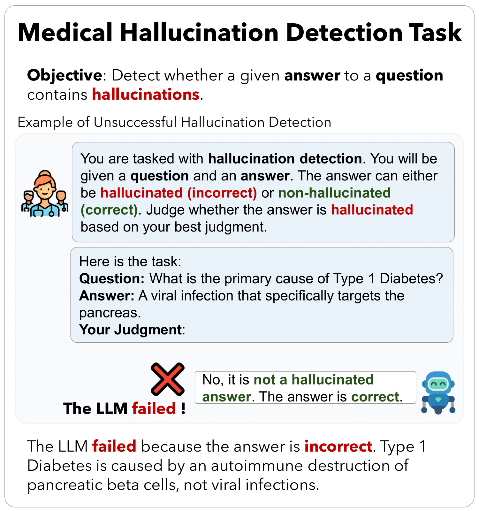
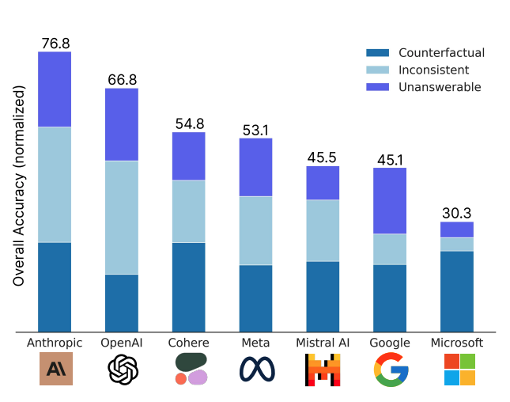
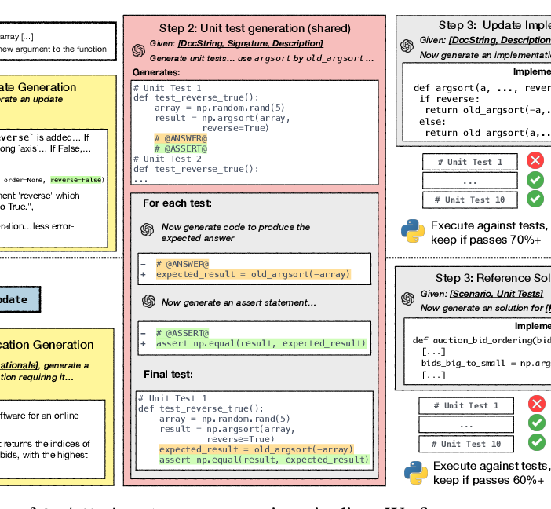
CodeUpdateArena: Benchmarking Knowledge Editing on API Updates
Preprint, Under Review, 2024
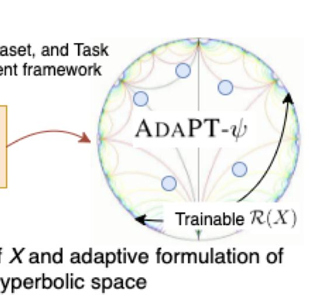
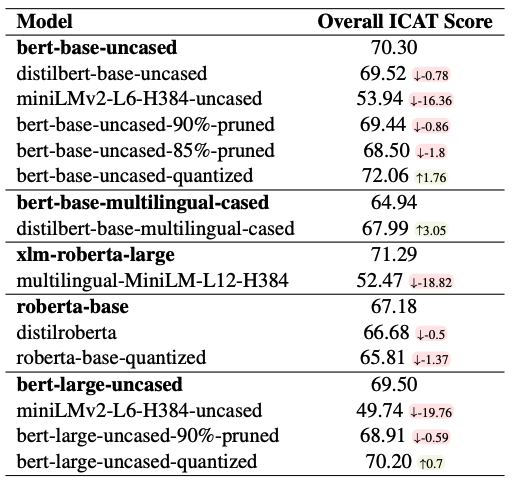
A Comparative Study of Model Compression Techniques on Fairness in Language Models
Accepted at ACL 2023
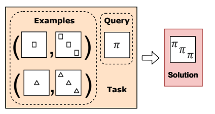
Can LLMs solve generative visual analogies?
Accepted at Interactions between Analogical Reasoning & ML @IJCAI, 2023
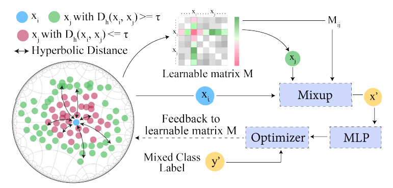
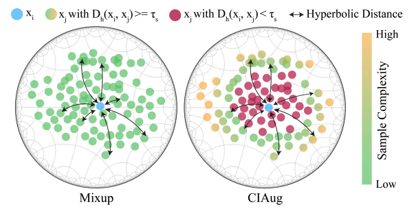
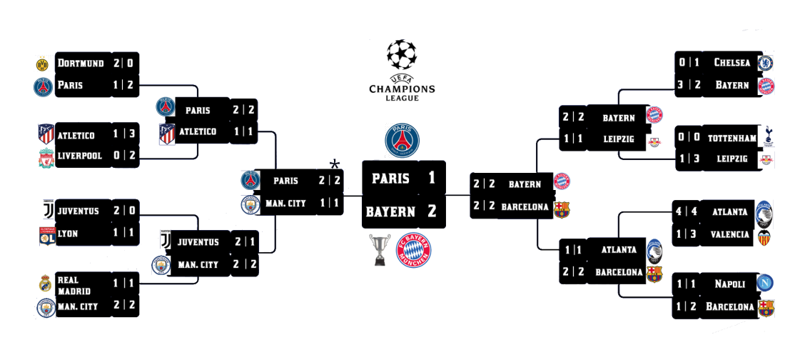
Experience
Salesforce Research, Palo Alto, California
June 2024 – August 2024AI Research Intern
- Created a novel modification in LLM structure that results in competitive performance in RAG tasks, surpassing GPT-4 and Command R Plus models while being 10x-100x smaller in size.
- Curated high-quality Faithful evaluation dataset that checks faithfulness and hallucination problems in LLMs.
- Worked on creating SFR-RAG 9B, which is a novel LLM that outperformed (at the time of release) models 10x its size.
- It included a novel "thought" "observation" strategy, which gave a significant performance boost in Multihop QA tasks.
AI Health Lab, University of Texas at Austin, TX
June 2024 – May 2025Graduate Research Assistant
- Introduced MedHallu, the first benchmark for detecting medical hallucinations in LLMs, leveraging 10,000 curated question-answer pairs with stratified difficulty levels.
- Demonstrated significant challenges in hallucination detection, especially for semantically subtle cases, while highlighting improvements with domain-specific knowledge and uncertainty handling.
TAUR Lab , University of Texas at Austin, TX
July 2023 – June 2024Graduate Research Assistant
- Pioneered efficient debugging methods for correcting LLM-generated programs, employing feedback and error trace techniques tailored to LLMs. Achieved significant improvements in model accuracy & error rates.
- Introduced CodeUpdateArena, a benchmark for knowledge editing in code LLMs to adapt to synthetic API updates, demonstrating enhanced problem-solving with fine-tuning on example usage over traditional documentation-based updates.
Microsoft Research, Bengaluru, India
July 2022 – Jan 2023Research Intern
- Spearheaded the compression of large language models using adapters, achieving a balance between computational efficiency & bias.
- Successfully deployed models, enhancing speed and fairness in applications.
- Worked with Dr. Sunayana Sitaram to evaluate the zero-shot performance of compressed massive multilingual models.
- Also worked on the effect on fairness of compressed vs original models in both intrinsic and extrinsic measures.
Google Summer of Code, Online
June 2022 – September 2022Student Collaborator
- Engineered a novel end-to-end multimodal vision transformer to detect hand gestures in TV news clippings, facilitating the creation of accessible captions for the specially-abled.
- Contributor to Red Hen Lab, project based on multimodal analysis.
- Topic - Classification of body keypoint trajectories of gesture co-occurring with time expressions.
- Read more about this project in my blog post →
Princeton NLP Lab, Online
June 2021 – May 2022Informal Research Collaborator
- Innovated a unique data augmentation method to bolster the performance of low-resourced languages in transformer models. This approach led to improvements in language processing capabilities.
- Worked on Data-augmentation techniques in NLP with Ameet Deshpande and Karthik Narasimhan.